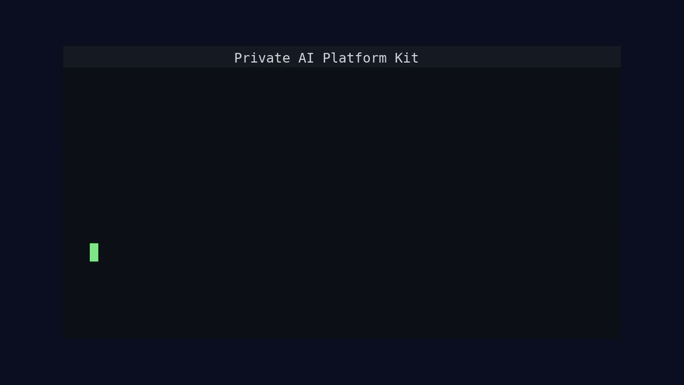

Private inference
OpenAI-compatible gateway with Ollama locally and vLLM profiles for NVIDIA or AMD GPU clusters.
Local-first. Customer-cluster ready.
A complete platform kit for teams that need Ollama locally, vLLM on NVIDIA or AMD GPU clusters, isolated agent workspaces, RAG, policy, observability, restore drills, and release evidence without being tied to a cloud provider.

The repo is a working platform surface, not just diagrams. It includes service code, Helm charts, local and customer cluster values, validation scripts, runbooks, and sample evidence.
OpenAI-compatible gateway with Ollama locally and vLLM profiles for NVIDIA or AMD GPU clusters.
Locked-down namespaces, storage, RBAC, quotas, default-deny networking, approved egress, and trace headers.
Local lexical retrieval plus optional Qdrant-backed customer knowledge profiles.
Approved model catalog, promotion requests, artifact provenance, eval suites, and gateway allowlists.
SLOs, release gates, quota and chargeback, data retention, egress governance, restore drills, and chaos drills.
Versioned OpenAPI snapshots with stable operation IDs, route coverage checks, and explicit auth declarations.
Runtime settings, Helm environment variables, chart defaults, and secret-sourced values are checked for drift.
Pinned Alpine runtime images, Trivy high/critical gates, SBOMs, SARIF upload, Cosign digest signing, and downloadable release evidence.
Bring up the local lab on kind, sync Argo CD applications, and send a smoke request through the gateway.
make toolchain-doctor
make validate
make api-contract
make config-contract
make local-up
make bootstrap-argocd
make sync
make smoke RUNTIME_BACKEND=ollamaUse the same charts and controls on clusters the customer already operates. Customer values are provider-neutral and assume existing ingress, storage, secrets, observability, and optional GPU node pools.
make customer-overlay with the customer Git repository and release tag.clusters/customer/values/vllm-nvidia.yaml for nvidia.com/gpu nodes.clusters/customer/values/vllm-amd.yaml for amd.com/gpu nodes.platform.ai/node-pool=gpu and platform.ai/gpu-vendor=<nvidia|amd>.The kit includes repeatable checks for customer demos, restore reviews, incident follow-ups, and production-readiness handoff.
make evidence
make release-gate
make release-gate-strict
make slo-check
make quota-check
make model-check
make model-provenance-check
make api-contract
make config-contract
make image-scan